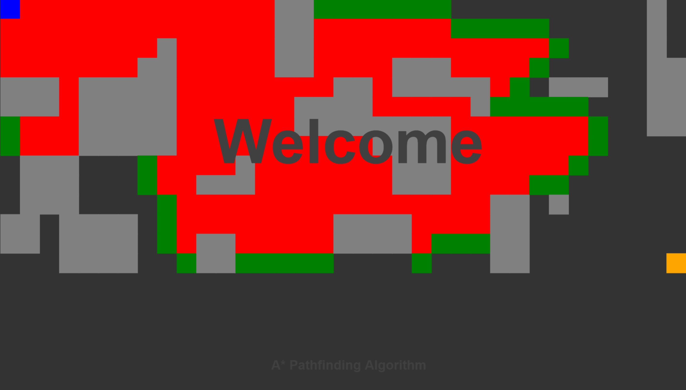
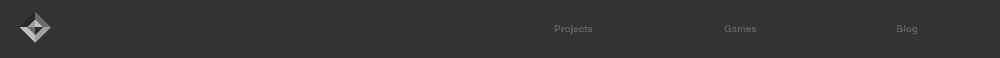
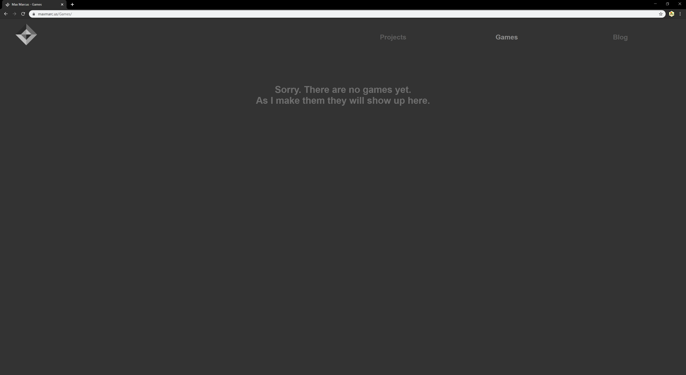
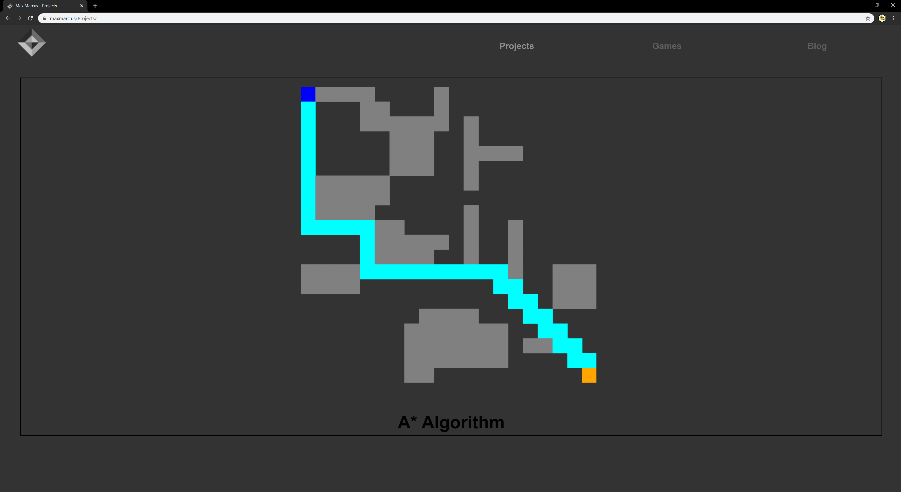
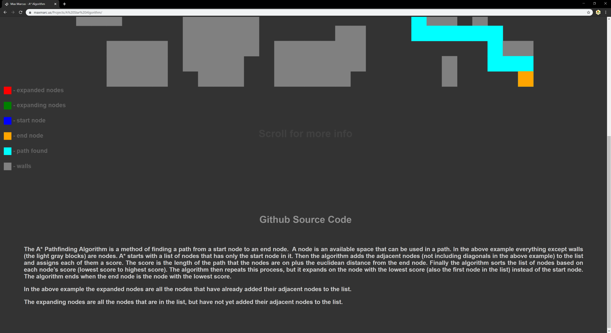

Hello, World!
I finally finished constructing my website! On it I will be posting all of the games and projects that I program, so that other people can enjoy them. Every week I will hopefully be able to post a blog about whatever game or project I am in the process of working. This is the first blog that I will upload to my website, so it will not be about any specific project. Instead it will be a tour of my website and how I made it.
I made my website entirely from scratch, using HTML, JavaScript, and CSS. I chose not to use a website builder, so that I could learn about how websites work and to improve my programming skills.
I first started by taking a project that has a visual (my visualization of the a* algorithm) that I had already finished and added some welcome text to it.
I then created a menu bar. I decided this would consist of a button to my Projects page, a button to my Games page, a button to my Blog, and a simple logo that I made in gimp.
With that I had completed my homepage! Most of its function is fairly self explanatory. Pressing the logo takes you back to the homepage, pressing the buttons takes you to each of their respective pages. But I still needed to design each of those pages. To do this I just copied and pasted the code for the menu bar into a new HTML file. Then, as I had nothing to put on the games page yet, I added a tidbit of information about it.
My next task was to design a page that would hold my projects. I wanted to display my visualization of the A* Algorithm, because I used it for the homepage. First I added an image and a title for the project, then I added a little bit of JavaScript to position these elements based on how many other projects there are, hopefully making it easy for me to add more projects to this page.
I wanted to make it so clicking on this project takes you to a page that displays the project, links to my Github page for it, and gives a little bit of information about the project. I did that and this was the result.

So far, that is my entire website. Clicking on the blog button will take you to my most recent blog, as you must have figured out. Once I have more blogs I will add a button to access my other blogs, but as of right now this is my only blog so that would not be useful.
Overall, I am very happy with the design of my website, and I look forward to expanding it. If I was to make it over again I don’t think that I would have done anything differently, but I would definitely be able to make it much quicker, because I have learned so much in this experience.
Thank you for reading my blog! I hope you enjoyed it. If you have any feedback, I would love to hear it. You can send it to feedback@maxmarc.us.